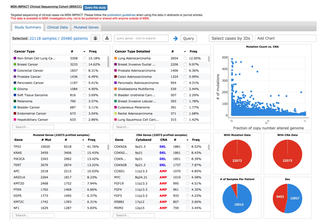
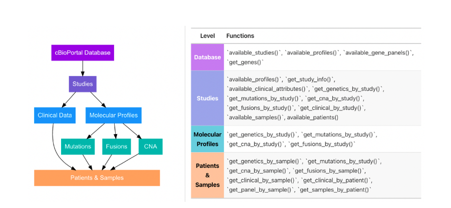

Introduction to MSK IMPACT Part 2

Karissa Whiting
Research Biostatistician
Memorial Sloan Kettering
Agenda
Accessing IMPACT Data (Review)
- {cbioportalR}
Processing IMPACT Data
- {gnomeR}
Visualizing & Analyzing IMPACT Data
- {gnomeR} & {ggplot}
Common Analysis Issues
- Multiple testing
- Tumor Mutation Burden
- Survival Analysis Issues
Get the Data: cBioPortal
cBioPortal is a website and database that provides access to genomic data sets
Provides tools for downloading, visualizing, and analyzing data sets
However, we often prefer to do all aspects of analysis programmatically for reproducibility!

Get the Data: cBioPortalR
Get the Data: Authenticate Yourself
- You can access public data anytime without credentials using the public site (https://www.cbioportal.org/):
# A tibble: 3 × 13
studyId name descr…¹ publi…² groups status impor…³ allSa…⁴ readP…⁵ cance…⁶
<chr> <chr> <chr> <lgl> <chr> <int> <chr> <int> <lgl> <chr>
1 acc_tcga Adre… "TCGA … TRUE PUBLIC 0 2022-0… 92 TRUE acc
2 bcc_unige… Basa… "Whole… TRUE PUBLIC 0 2022-0… 293 TRUE bcc
3 ampca_bcm… Ampu… "Exome… TRUE PUBLIC 0 2022-0… 160 TRUE ampca
# … with 3 more variables: referenceGenome <chr>, pmid <chr>, citation <chr>,
# and abbreviated variable names ¹description, ²publicStudy, ³importDate,
# ⁴allSampleCount, ⁵readPermission, ⁶cancerTypeId- Many project rely on internal data sets and will require you to authenticate yourself (https://cbioportal.mskcc.org/)
# assumes you've already gotten a login/token
set_cbioportal_db('msk')
available_studies() %>% head(n = 3)# A tibble: 3 × 13
studyId name descr…¹ publi…² pmid citat…³ groups status allSa…⁴ readP…⁵
<chr> <chr> <chr> <lgl> <chr> <chr> <chr> <int> <int> <lgl>
1 dlbc_bcgsc_… Diff… Whole … TRUE 2369… Morin … PUBLIC 1 52 TRUE
2 dlbc_broad Diff… Whole … TRUE 2234… Lohr e… PUBLIC 1 58 TRUE
3 fl_unmc Foll… Copy-n… TRUE <NA> <NA> EXTEN… 1 198 TRUE
# … with 3 more variables: cancerTypeId <chr>, referenceGenome <chr>,
# importDate <chr>, and abbreviated variable names ¹description,
# ²publicStudy, ³citation, ⁴allSampleCount, ⁵readPermissionGet the Data: How Data is Organized in cBioPortal
Get the Data: How Data is Organized in cBioPortal
!! NOTE: Some studies exist in both public and MSK databases, but may differ in format or content
Get the Data: A Few Notes
Sometimes you need to analyze data not available in cBioPortal in cases of:
- Germline tumor samples
- Samples from other institutions
- Data hand curated/annotated for certains variants (e.g. certain SNPs only)
Be sure to check for selection of genes or filters that may have been applied
You may have to do some additional data wrangling to get this data to work in MSK pipelines
Processing Data
Processing Data: Issues To Address
- Research Samples vs. IMPACT Samples
- Some samples may be sequenced outside MSK or using different panels. You can usually tell by the sample ID (if P-000XXX-T0X-IMX, it is likely IMPACT with IMX indicating panel)
- Cohort Inclusion
- Samples with no alterations may be dropped when pulling data
- Data Formats & Gene Standards Often Inconsistent
- Column names, data formats and gene names may differ between studies or even within studies!
- Missing Data in Mutation Status
- Mutation Status is sometimes missing data.
Processing Data: Code Example
Code Example on github: https://github.com/MSKCC-Epi-Bio/introduction-to-msk-impact
Processing Data: Recap
- Research Samples vs. IMPACT Samples
- Some samples may be sequenced outside MSK or using different panels.
- Check panels and annotate NAs accordingly
- Cohort Inclusion
- Samples with no alterations may be dropped when pulling data
- Use
samplesarg ofcreate_gene_binary()and check data
- Data Formats & Gene Standards Often Inconsistent
- Column names, data formats and gene names may differ between studies or even within studies!
- Reformat data as necessary and check gene aliases (
recode_aliases = TRUE)
- Missing Data in Mutation Status
- Mutation Status is sometimes missing data.
- Check Mutation Status column
Analyzing Data
Analyzing Data: Issues To Address
- OncoKB Annotation
- Some studies may require oncoKB annotation of data
- Multiple Testing and False Positives
- Very low prevalence genes are often not very informative in standard IMPACT analyses. Choose a threshold (e.g. 1% or 5 %) a prior to limit number of tests.
- Report q-value (adjusted for multiple testing)
- Analyzing Tumor Mutation Burden Across Samples
- Although TMB is always measured as number of mutations per coding area, depth of sequencing can make this measure inconsistent between studies.
- Usually ok within IMPACT studies but not always comparable with WES studies
- Survival Analysis Biases
Analyzing Data: Multiple Testing
Because each hypothesis test has a probability of producing a type I error (falsely rejecting a null hypothesis that is true), performing a large number of hypothesis tests virtually guarantees the presence of type I errors among the findings.
Firstly, depending on size of data and type of analysis, choose a prevalence threshold for genes to test
Report tests with adjustment- Recommended to use false discovery rate adjustment as opposed to FWER (eg. bonferroni) as it controls for a low proportion of false positives, instead of guarding against making any false positive conclusion at all
Reference: Goeman JJ, Solari A. Multiple hypothesis testing in genomics. Stat Med. 2014 May 20;33(11):1946-78. doi: 10.1002/sim.6082. Epub 2014 Jan 8. PMID: 24399688.
Analyzing Data: Tumor Mutational Burden
- Tumor mutation burden (TMB): total number of mutations per coding area of a tumor genome.
- Coding area (denominator) different for different versions of MSK-IMPACT

- Get this data from cBioPortal when you can (they have published methods on this).
available_clinical_attributes(<your-study>)
get_clinical_by_study(clinical_attribute = <tmb-attribute-name>)- If it’s not available, you can calculate it yourself
Analyzing Data: Survival Analysis Biases
- Often in older studies, patients who were sampled were worse off- check this if you can
- Also, sampling bias may be present:
Brown S, Lavery JA, Shen R, et al. Implications of Selection Bias Due to Delayed Study Entry in Clinical Genomic Studies. JAMA Oncol. 2022;8(2):287–291. doi:10.1001/jamaoncol.2021.5153